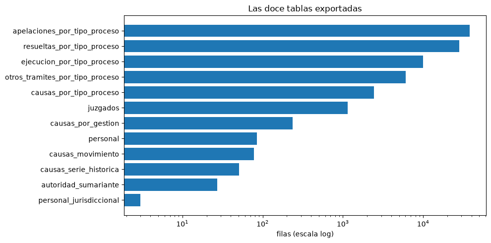

Los datos · 03
Los datos, tabla por tabla
El proyecto produce tres capas de datos. Las doce tablas de data/processed/ son lo que publica el Anuario, sin interpretar. La capa analítica, en data/processed/analitico/, las organiza para poder cruzarlas. La capa curada, en data/curated/, agrega los indicadores. Esta página recorre todas con ejemplos reales. El significado de cada columna está en el diccionario completo.
Antes de abrir un archivo: cinco ideas
1. Grano
El grano es qué representa una fila. En causas_por_tipo_proceso, una fila es «un tipo de proceso de una materia en una ciudad o distrito, en una página del Anuario». En personal, una fila es «un ente de un distrito». Unir tablas de grano distinto sin cuidado multiplica los números. Es el concepto más importante de todo el proyecto.
2. Trazabilidad
Toda fila trae cuadro_origen y pagina_pdf. Con esas dos columnas se abre el PDF en esa página y se verifica la cifra a mano. pagina_pdf es la página física del archivo, contada desde 1, que no siempre coincide con el número impreso al pie. La columna revisado_manual viene en False y existe para marcar lo que se audite a mano.
3. Fuente, derivada, trazabilidad
Cada columna tiene un origen, y el diccionario lo dice:
- fuente: está impresa en el PDF.
- derivada: la dedujo el proyecto con una regla documentada. Se puede descartar sin perder ningún dato. Los nombres con
_derivado,_derivadao_derivado_del_bloqueson de este tipo. - trazabilidad: sirve para auditar, no es un dato del Anuario.
4. Vacío no es cero
Una celda vacía (nulo, NaN, <NA>) significa «no publicado» o «no aplica». Un cero significa «ninguna causa». El proyecto nunca rellena un vacío con cero: sería inventar un dato.
5. Parquet es la copia de referencia
Cada tabla se publica dos veces. El Parquet conserva los tipos: entero con vacíos (Int64), booleano, texto. El CSV es texto plano: al releerlo, un entero con vacíos vuelve como decimal y un booleano como texto. Para analizar, usar el Parquet.
import pandas as pd
causas = pd.read_parquet("data/processed/causas_por_tipo_proceso.parquet")
base = pd.read_parquet("data/processed/analitico/dataset_analitico_interno.parquet")Las doce tablas
| Tabla | Filas | Cols. | Grano: una fila es… | Cuadros |
|---|---|---|---|---|
causas_movimiento | 78 | 26 | una materia, ciudad o departamento en un cuadro | 9.1.1, 9.1.3, 9.1.5, 9.1.7, 9.1.9, 9.1.11 |
causas_por_gestion | 235 | 15 | una materia en un año (2019 a 2023) y un ámbito | 9.1.2, 9.1.6, 9.1.10 |
causas_serie_historica | 51 | 17 | un año (2007 a 2023) en un ámbito | 9.1.4, 9.1.8, 9.1.12 |
juzgados | 1.148 | 26 | una celda: fila × columna de un cuadro | 4.1.1 a 4.1.10 |
personal | 85 | 17 | un ente, un distrito o un ente de un distrito, según el cuadro | 14.1.1, 14.1.2, 14.1.3 |
personal_jurisdiccional | 3 | 11 | jurisdiccional, administrativo o total | sin número, p. 746 |
autoridad_sumariante | 27 | 21 | un distrito o un ente | 13.1.1, 13.1.2, 13.1.3 |
causas_por_tipo_proceso | 2.419 | 65 | un tipo de proceso en una ciudad o distrito, en una página | 17 cuadros de causas de los cap. 5 y 6 |
resueltas_por_tipo_proceso | 27.993 | 33 | una celda: fila del PDF × columna | 17 cuadros |
apelaciones_por_tipo_proceso | 37.871 | 31 | ídem | 27 cuadros |
ejecucion_por_tipo_proceso | 10.015 | 30 | ídem | 11 cuadros |
otros_tramites_por_tipo_proceso | 6.028 | 33 | ídem | 25 cuadros |
| Total | 85.953 |

Las tablas del capítulo 9: el resumen del sistema
causas_movimiento
El movimiento de causas de 2023. Seis cuadros que son la misma realidad vista desde tres ámbitos y tres ejes:
eje: materia eje: ciudad eje: departamento capitales 9.1.1 9.1.3 provincias 9.1.5 9.1.7 consolidado 9.1.9 9.1.11
La columna eje dice qué es cada fila, y según eso se llena ciudad, departamento o las columnas de materia. Las filas de total («NACIONAL CAPITAL», «Total general») tienen tipo_fila_derivado = total.
| cuadro_origen | pagina_pdf | etiqueta_fila | num_juzgados | pendientes_inicio | ingresadas | atendidas | resueltas | pendientes_fin | pct_resueltas |
|---|---|---|---|---|---|---|---|---|---|
| 9.1.1 | 673 | PÚBLICO CIVIL Y COMERCIAL | 163 | 29.688 | 66.140 | 95.828 | 67.788 | 28.040 | 70,70 |
| 9.1.1 | 673 | PÚBLICO DE FAMILIA | 106 | 24.149 | 50.600 | 74.749 | 52.523 | 22.226 | 70,30 |
| 9.1.1 | 673 | PÚBLICO NIÑEZ Y ADOLESCENCIA | 26 | 3.846 | 8.549 | 12.395 | 8.368 | 4.027 | 67,50 |
| 9.1.1 | 673 | PARTIDO DE TRABAJO Y SEGURIDAD SOCIAL | 51 | 23.611 | 21.382 | 44.992 | 20.797 | 24.195 | 46,20 |
pct_resueltas es resueltas ÷ atendidas × 100 (72 de 72 filas), pct_pendientes es pendientes_fin ÷ atendidas × 100 (65 de 72) y promedio_por_juzgado es ingresadas ÷ num_juzgados (24 de 25). Vienen impresos: el proyecto solo verificó cómo los calcula el Anuario. Ninguno es la tasa de resolución.
causas_por_gestion
Causas resueltas por materia en cada año de 2019 a 2023, más el porcentaje. Es la tabla que usa nombres de materia distintos a causas_movimiento (caja de título, abreviaturas), y por eso hizo falta la auditoría de materias. Tiene celdas vacías legítimas: materias que no existían en provincias en algunos años.
| cuadro_origen | ambito | etiqueta_fila | gestion | resueltas | pct_resueltas | materia_homologada |
|---|---|---|---|---|---|---|
| 9.1.2 | capital | Público Civil y Comercial | 2.019 | 61.635 | 69,60 | Público Civil y Comercial |
| 9.1.2 | capital | Público Civil y Comercial | 2.020 | 38.356 | 66,70 | Público Civil y Comercial |
| 9.1.2 | capital | Público Civil y Comercial | 2.021 | 52.219 | 66,70 | Público Civil y Comercial |
| 9.1.2 | capital | Público Civil y Comercial | 2.022 | 58.647 | 67,90 | Público Civil y Comercial |
| 9.1.2 | capital | Público Civil y Comercial | 2.023 | 67.788 | 70,70 | Público Civil y Comercial |
causas_serie_historica
La carga procesal total, por año, desde 2007. Sin materia. Sirve como control y como serie larga, pero varias gestiones anteriores no cierran sus identidades contables (por ejemplo, 9.1.4 en 2019 difiere en 76 causas). No usarla como serie confiable sin contrastarla con los anuarios de esos años.
| cuadro_origen | ambito | gestion | pendientes_inicio | ingresadas | atendidas | resueltas | pendientes_fin |
|---|---|---|---|---|---|---|---|
| 9.1.12 | nacional | 2.020 | 345.916 | 263.437 | 609.353 | 261.748 | 347.605 |
| 9.1.12 | nacional | 2.021 | 327.424 | 349.998 | 677.422 | 333.279 | 344.143 |
| 9.1.12 | nacional | 2.022 | 337.816 | 378.093 | 715.911 | 351.230 | 364.680 |
| 9.1.12 | nacional | 2.023 | 337.394 | 401.448 | 738.841 | 382.333 | 356.508 |
El PDF imprime columnas sin título. Se llaman col_sin_rotulo_N y no se les inventó nombre. Sí se investigó qué reproducen: en 9.1.12 las tres son la variación interanual de pendientes al inicio, ingresadas y atendidas (16 de 16 años cada una); en 9.1.8, de pendientes, ingresadas y resueltas (16, 15 y 15 de 16); la primera de 9.1.4 es la variación de ingresadas; la de 9.1.5 es la participación de cada materia en el total de ingresadas (14 de 14, suma 100,00). Las otras dos de 9.1.4 no coinciden con nada. Que una columna reproduzca un cálculo no prueba que sea eso, así que el nombre no cambió.
juzgados: los órganos de cada territorio
Los cuadros 4.1.x dicen cuántos juzgados, tribunales, salas y conciliadores hay y dónde. La tabla está en formato largo: una fila por cada celda con valor, con columna (el número de columna del PDF, col_01, col_02…) y valor.
La trampa: 4.1.1 está orientado al revés que los otros nueve. En 4.1.1 las columnas son las diez ciudades capitales más el total y las filas son los tipos de órgano. En 4.1.2 a 4.1.10 (uno por departamento) las filas son localidades y las columnas, tipos de órgano; col_01 es la población proyectada al 2022, no un juzgado. Una misma col_NN no tiene un significado global: la clave es siempre cuadro_origen + columna.
| cuadro_origen | provincia_o_grupo | localidad_o_subtipo | columna | columna_rotulo_canonico | tipo_columna | valor |
|---|---|---|---|---|---|---|
| 4.1.2 | Oropeza | Yotala | col_01 | Población proyectada al 2022 | poblacion | 9.081 |
| 4.1.2 | Oropeza | Poroma | col_01 | Población proyectada al 2022 | poblacion | 15.777 |
| 4.1.2 | Azurduy | Azurduy | col_01 | Población proyectada al 2022 | poblacion | 11.166 |
| 4.1.2 | Azurduy | Tarvita | col_01 | Población proyectada al 2022 | poblacion | 13.876 |
| 4.1.2 | Zudañez | Zudañez | col_01 | Población proyectada al 2022 | poblacion | 7.640 |
La auditoría agregó al lado de col_NN el significado de cada columna (columna_rotulo_canonico, columna_codigo_canonico, tipo_columna: poblacion, organo_judicial, conciliador, total, indeterminado u otro) y, solo para 4.1.1, la jerarquía de sus 37 filas (fila_id, estructura_fila, fila_padre_id, nivel_jerarquia, es_hoja_jerarquia, tipo_entidad).
Sumando las 37 filas de 4.1.1 da 2.422; el número correcto es 846, porque hay subtotales mezclados con su detalle. Y 846 tampoco son «juzgados»: incluye tribunales, salas y 95 conciliadores. No existe una columna numero_juzgados_real a propósito. Ver auditoría 4.
personal y personal_jurisdiccional
Ítems (puestos presupuestados) y remuneración mensual en bolivianos, separados por mujer, varón y acefalías (vacantes). Tres cuadros con tres disposiciones que se solapan:
- 14.1.1: distrito × ente. El distrito es una celda combinada; se asigna a cada fila y queda marcado
distrito_derivado_del_bloque = True. Cada bloque cierra con una fila SUB TOTAL. - 14.1.2: por ente, a nivel nacional.
- 14.1.3: por distrito. Es la vista que usa la capa analítica: una fila por distrito, sin solapamientos.
| cuadro_origen | distrito | items_mujer | items_varon | items_acefalias | items_total | remun_total | departamento_derivado |
|---|---|---|---|---|---|---|---|
| 14.1.3 | OFICINA NACIONAL | 265 | 291 | 5 | 561 | 5.224.212 | — |
| 14.1.3 | CHUQUISACA | 316 | 216 | 33 | 565 | 3.666.867 | Chuquisaca |
| 14.1.3 | LA PAZ | 797 | 683 | 80 | 1.560 | 9.940.921 | La Paz |
| 14.1.3 | COCHABAMBA | 624 | 453 | 35 | 1.112 | 7.269.348 | Cochabamba |
Identidad verificada: mujer + varón + acefalías = total, en ítems y en remuneración, en las 85 filas; y los SUB TOTAL de 14.1.1 coinciden uno por uno con 14.1.3. personal_jurisdiccional es la tabla sin número al pie de la página 746:
| personal | items | items_pct | remuneracion | remuneracion_pct |
|---|---|---|---|---|
| JURISDICCIONAL | 5.758 | 79 | 39.674.700 | 81 |
| ADMINISTRATIVO | 1.569 | 21 | 9.467.800 | 19 |
| TOTAL | 7.327 | 100 | 49.142.500 | 100 |
autoridad_sumariante
Procesos disciplinarios internos del Órgano Judicial. 13.1.1: movimiento de procesos por distrito. 13.1.2 y 13.1.3: sanciones (amonestación, multa, suspensión, destitución) por distrito y por ente. No tiene relación con el movimiento de causas y no se une a la capa analítica.
| cuadro_origen | etiqueta_fila | amonestacion | multa | suspension | destitucion | total_sanciones |
|---|---|---|---|---|---|---|
| 13.1.2 | OFICINA NACIONAL | 11 | 8 | 10 | 5 | 34 |
| 13.1.2 | CHUQUISACA | 0 | 5 | 2 | 0 | 7 |
| 13.1.2 | LA PAZ | 0 | 0 | 7 | 0 | 7 |
| 13.1.2 | COCHABAMBA | 3 | 3 | 22 | 3 | 31 |
Las cinco tablas por tipo de proceso (capítulos 5 y 6)
Una ancha y cuatro largas
causas_por_tipo_proceso va en formato ancho: una columna por variable, como una planilla. Se puede porque sus 17 cuadros comparten vocabulario: pendientes_inicio significa lo mismo en civil que en penal. Los nombres de sus columnas se escribieron a mano y se verificaron contra el PDF y contra el capítulo 9.
Las otras cuatro van en formato largo: una fila por celda, con columna (nombre corto), orden_columna, valor y rotulo_columna_pdf (el encabezado tal como está impreso, con « / » donde el PDF lo parte en líneas). La razón es de la fuente: cada materia publica su propio juego de formas de resolución, y lado a lado darían cientos de columnas casi todas vacías.
Ancho: una fila «Sucre, ordinario» con columnas ingresadas = 1.424, atendidas = 2.397, resueltas = 1.286. Largo: tres filas «Sucre, ordinario, ingresadas, 1.424», «Sucre, ordinario, atendidas, 2.397», «Sucre, ordinario, resueltas, 1.286». Misma información, otra forma.
causas_por_tipo_proceso
| cuadro_origen | pagina_pdf | entidad | grupo_proceso_norm | tipo_proceso | readecuadas_ley_439 | nuevas_ingresadas | atendidas | resueltas | pendientes_fin |
|---|---|---|---|---|---|---|---|---|---|
| 5.1.1.1 | 121 | SUCRE | ORDINARIO | ORDINARIO | 770 | 1.424 | 2.397 | 1.286 | 1.111 |
| 5.1.1.1 | 121 | SUCRE | EXTRAORDINARIO | REGULARIZACIÓN DE DERECHO PROPIETARIO SOBRE BIENES INMUEB… | 8 | 12 | 20 | 6 | 14 |
| 5.1.1.1 | 121 | SUCRE | EXTRAORDINARIO | INTERDICTOS | 32 | 44 | 79 | 37 | 42 |
| 5.1.1.1 | 121 | SUCRE | EXTRAORDINARIO | DESALOJO DE VIVIENDA | 5 | 28 | 34 | 20 | 14 |
| 5.1.1.1 | 121 | SUCRE | MONITOREO | EJECUTIVO | 60 | 2.019 | 2.483 | 2.356 | 127 |
Las columnas se agrupan así:
| Grupo | Columnas |
|---|---|
| Trazabilidad | cuadro_origen, pagina_pdf, orden_fila, firma (el formato de tabla), familia, n_columnas, titulo_pagina |
| Quién es la fila | ambito, entidad (la ciudad o distrito literal), ciudad, distrito, departamento_derivado, es_total_nacional, unidad_fila (tipo_proceso o entidad), tipo_fila_derivado (detalle o total) |
| Qué proceso | tipo_proceso (literal del PDF, corregido de defectos de extracción), tipo_proceso_extraido (lo que salió antes de corregir), grupo_proceso y grupo_proceso_norm (el rótulo vertical), etapa_proceso_fuente, contexto_accion_penal, tipo_accion_penal |
| Qué materia | materia_seccion (de la numeración), materia_norm, materia_homologada, materia_cruda (el título de la página) |
| Juzgados | num_juzgados_pagina (la cifra de la cabecera «SUCRE 14», vale para toda la ciudad), num_juzgados (cuando un cuadro lo publica como columna) |
| Formas de ingreso | pendientes_inicio, readecuadas_ley_439, recibidas_excusa_recusacion, preliminares_formalizados, cautelares_formalizados, nuevas_ingresadas, recibidas_otros_juzgados, ingresadas_conversion_acciones, ingresadas_reenvio, otras_formas_ingreso… |
| Totales | atendidas, resueltas, pendientes_fin |
| Formas de salida penales | sobreseimiento, terminacion_anticipada, merecieron_imputacion_formal, merecieron_acusacion, concluidas_rechazo_denuncia, procesos_rebeldia… (solo en cuadros penales) |
- Las filas de total ya están sumadas. Excluir
tipo_fila_derivado == "total"yes_total_nacionalantes de agregar, o se cuenta todo dos veces. La tabla analítica ya lo hace. pendientes_inicioestá vacío en toda la materia civil: los cuadros 5.1.1.1 y 6.1.1.1 publicanreadecuadas_ley_439en esa posición.- Los cuadros penales no publican
resueltas: publican formas de salida propias. Por eso las fórmulas de congestión solo se aplican a las materias no penales.
Las cuatro tablas largas
Así se ve una fila del PDF (un tipo de proceso de la página 132) convertida en varias filas, una por columna del cuadro:
| cuadro_origen | pagina_pdf | orden_fila | entidad | tipo_proceso | columna | rotulo_columna_pdf | valor |
|---|---|---|---|---|---|---|---|
| 5.1.1.2 | 132 | 2 | SUCRE | REGULARIZACIÓN DE DERECHO PROPIETARIO SOBRE BIENES INMUEB… | formas_resolucion_causas_sentencia | FORMAS DE / RESOLUCIÓN DE / CAUSAS CON / SENTENCIA | 2 |
| 5.1.1.2 | 132 | 2 | SUCRE | REGULARIZACIÓN DE DERECHO PROPIETARIO SOBRE BIENES INMUEB… | desistimiento | DESISTIMIENTO | 0 |
| 5.1.1.2 | 132 | 2 | SUCRE | REGULARIZACIÓN DE DERECHO PROPIETARIO SOBRE BIENES INMUEB… | retiro_demanda | FORMAS DE RESOLUCIÓN DE CAUSAS CON AUTO DEFINITIVO / DE L… | 1 |
| 5.1.1.2 | 132 | 2 | SUCRE | REGULARIZACIÓN DE DERECHO PROPIETARIO SOBRE BIENES INMUEB… | extincion_inactividad | FORMAS DE RESOLUCIÓN DE CAUSAS CON AUTO DEFINITIVO / EXTI… | 0 |
| 5.1.1.2 | 132 | 2 | SUCRE | REGULARIZACIÓN DE DERECHO PROPIETARIO SOBRE BIENES INMUEB… | acuerdo_transaccional | FORMAS DE RESOLUCIÓN DE CAUSAS CON AUTO DEFINITIVO / ACUE… | 0 |
| 5.1.1.2 | 132 | 2 | SUCRE | REGULARIZACIÓN DE DERECHO PROPIETARIO SOBRE BIENES INMUEB… | conciliacion_intraprocesal | FORMAS DE RESOLUCIÓN DE CAUSAS CON AUTO DEFINITIVO / CONC… | 0 |
| 5.1.1.2 | 132 | 2 | SUCRE | REGULARIZACIÓN DE DERECHO PROPIETARIO SOBRE BIENES INMUEB… | presentado_no | POR PRESENTADO / NO | 2 |
| 5.1.1.2 | 132 | 2 | SUCRE | REGULARIZACIÓN DE DERECHO PROPIETARIO SOBRE BIENES INMUEB… | excusa | EXCUSA | 0 |
Por esta razón el proyecto distingue filas fuente (filas del PDF) de filas físicas (filas del archivo). La clave de una fila física es cuadro_origen + pagina_pdf + orden_fila + orden_columna.
resueltas_por_tipo_proceso: cómo terminaron las causas: con sentencia, con auto definitivo (desistimiento, extinción por inactividad, acuerdo…), por finalización de competencia (excusa, recusación, acumulación…).apelaciones_por_tipo_proceso: recursos de apelación en efecto suspensivo y devolutivo: interpuestos, remitidos y devueltos según la resolución de la sala (confirmatoria, revocatoria total o parcial, anulatoria, inadmisible).ejecucion_por_tipo_proceso: causas en ejecución de sentencia. Es la única sin columnagestion: el cuadro no la imprime y no se inventó.otros_tramites_por_tipo_proceso: 25 cuadros heterogéneos: sentencias por número de demandados, medidas cautelares, permisos de viaje, entre otros.
Las columnas que agregaron las auditorías
Ninguna auditoría borró un valor: cada una agregó columnas al lado de las originales.
| Columna nueva | Convive con | Qué agrega |
|---|---|---|
departamento_derivado | ciudad, distrito, entidad | el departamento, para poder unir tablas por territorio |
materia_norm, materia_homologada | materia_cruda | la errata corregida y las 11 equivalencias aprobadas entre nombres de materia |
columna_rotulo_canonico, tipo_columna… | columna (col_NN) | qué significa cada columna de los cuadros de juzgados |
fila_id, estructura_fila, es_hoja_jerarquia… | provincia_o_grupo | la jerarquía de las 37 filas de 4.1.1 |
etapa_proceso_fuente, contexto_accion_penal | tipo_proceso | la etapa penal y el bloque padre que distinguen filas que parecían duplicadas |
tipo_proceso (corregido) | tipo_proceso_extraido | el rótulo tal como está en el PDF, reparando 87 defectos de extracción |
Así se ven las tres columnas de materia:
| materia_cruda (literal del PDF) | materia_norm (errata corregida) | materia_homologada (clave común) |
|---|---|---|
| PÚBLICO CIVIL Y COMERCIAL | PÚBLICO CIVIL Y COMERCIAL | Público Civil y Comercial |
| Público Civil y Comercial | Público Civil y Comercial | Público Civil y Comercial |
| INSTRUCCÓN CONTRA LA VIOLENCIA HACIA LA MUJER | INSTRUCCIÓN CONTRA LA VIOLENCIA HACIA LA MUJER | Instrucción Contra la Violencia hacia las Mujeres |
La capa analítica (data/processed/analitico/)
El notebook 08 organiza las doce tablas en cinco, sin aplanar nada. Se explica a fondo en la capa analítica.
| Tabla | Filas | Cols. | Grano |
|---|---|---|---|
dataset_analitico_interno | 1.997 | 87 | ámbito × territorio × materia × tipo de proceso × etapa × contexto penal. La tabla para analizar. |
metricas_tipo_proceso_long | 81.907 | 35 | las cuatro tablas largas apiladas, con familia_metrica |
movimiento_gestion_2023 | 56 | 39 | ámbito × materia en 2023, cruzando movimiento y gestión |
recursos_judiciales_geografia | 19 | 16 | ámbito × territorio: órganos publicados por tipo |
personal_geografia | 9 | 15 | un distrito judicial |
Más diccionario_analitico.csv: las 192 columnas de estas tablas, con su rol y su riesgo de leakage (ver leakage).
La capa curada (data/curated/)
Los notebooks 09 a 11 le agregan columnas a la tabla analítica, sin borrar ni pisar ninguna. El detalle está en EDA e indicadores.
| Archivo | Cols. | Qué agrega |
|---|---|---|
features/dataset_analitico_indicadores | 100 | estado_gestion y 12 indicadores y banderas |
features/dataset_analitico_curado | 115 | además: 8 banderas de outlier, 2 columnas winsorizadas, 5 log_ |
eda/matriz_nulos_clasificada.csv | las 87 columnas con su porcentaje de nulos y la causa | |
eda/resumen_dinamica_procesal.csv | estado de gestión × materia | |
eda/resumen_indicadores_materia.csv | indicadores por materia | |
eda/resumen_outliers_estratificado.csv | umbrales IQR de cada estrato |
Y en reports/: las tablas resumen por departamento, materia y ámbito, el top 20 de procesos con más stock pendiente, y las figuras.
La carpeta de auditoría (data/processed/auditoria/)
Es la evidencia de cada decisión. Tres tipos de archivo:
| Tipo | Archivos | Quién los escribe |
|---|---|---|
| Inventarios y registros de la extracción | catalogo_cuadros, firmas_procesos, columnas_4_1_encabezados, filas_complementarias, problemas_extraccion, problemas_extraccion_procesos, problemas_normalizacion, discrepancias, equivalencias_candidatas | notebooks 02 a 06, en cada corrida |
| Validaciones reproducibles (deben dar OK) | validacion_geografia, inconsistencias_geografia (debe estar vacío), validacion_juzgados, validacion_contexto_procesos, validacion_correcciones_tipo_proceso, validacion_integracion_interna, cobertura_integracion_interna | notebooks 05 y 08 |
| Decisiones de auditoría (entradas fijas) | propuesta_equivalencias_materias, propuesta_encabezados_juzgados, propuesta_filas_4_1_1, propuesta_contexto_tipo_proceso, propuesta_contexto_accion_penal, propuesta_etapas_tipo_proceso, propuesta_correcciones_extraccion_tipo_proceso, propuesta_variaciones_editoriales_tipo_proceso, claves_repetidas_tipo_proceso, auditoria_uniones_internas, auditoria_fragmentos_tipo_proceso, auditoria_fragmentos_tipo_proceso_completa | las auditorías, a mano; ningún notebook los reescribe. Los notebooks 05, 08 y 13 los leen para verificar que el código coincide con ellos |
Cómo se relacionan las tablas
Todas se pueden ubicar en el territorio, pero a niveles distintos:
- Las cinco tablas de procesos tienen
ciudaden capitales ydistritoen provincias.departamento_derivadosale del que corresponda; los totales nacionales quedan vacíos. personalyautoridad_sumariantetienendistrito, que coincide con el departamento salvo OFICINA NACIONAL.juzgadostienedepartamento.causas_movimientotienedepartamentoen los cuadros por departamento ydepartamento_derivadoen los de ciudades.
departamento_derivado es la columna pensada para unir. La comparación ignora mayúsculas, tildes y espacios, pero no modifica ningún literal del PDF.
Mirá si la clave es única del otro lado. Si no lo es, las filas se multiplican y las sumas se inflan sin que nada avise. Unir movimiento con apelaciones multiplica las filas por 743. Por eso existe la capa analítica: ya hizo las uniones seguras.